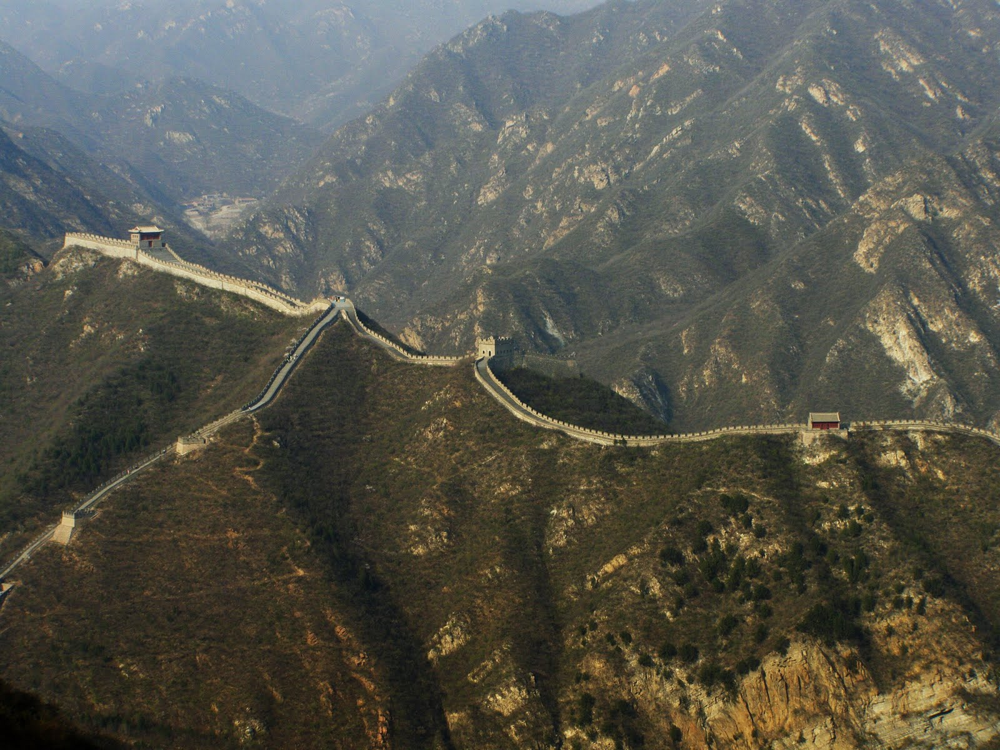
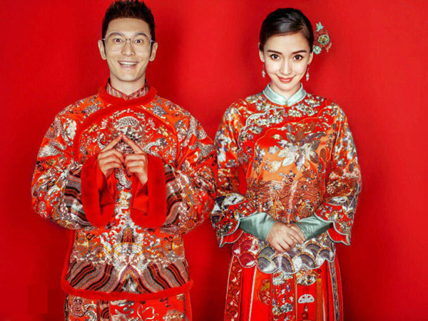

Test
These Are Some Travel Recommends
.jpg)
With the new data from China, world cumulative total of cases increases to 1,323, with 49 deaths. March 27 - Chinese authorities report SARS cases in other parts of China. April 1 - WHO epidemiologists determine that, since 19 March, 9 residents of Beijing, Taiwan and Singapore have developed SARS following business trips to Hong Kong. April 2 - WHO recommends that persons traveling to Hong Kong and Guangdong Province consider postponing all but essential travel until ..
This Is A Picture Of The Great Wall Of China

The history of the Great Wall of China began when fortifications built by various states during the Spring and Autumn (771–476 BC) and Warring States periods (475–221 BC) were connected by the first emperor of China, Qin Shi Huang, to protect his newly founded Qin dynasty (221–206 BC) against incursions by nomads from ...

Chinese people were wearing silk while other people were still dressing in animal skins.
Clothing in China not only evolve over time; it often transformed dramatically following dynastic changes or the imperial decree of a new ruler. In ancient feudal society, people's rank and position could easily be distinguished from their daily dress, especially for the ordinary people and the upper-class.
Among the upper dominating classes, only the Emperor was assigned the colour yellow and the dragon emblem on traditional Chinese imperial dress as an exclusive affirmation of their power.
There is no "typical" Chinese costume, although today, if any style of clothing epitomises "Chineseness", it would be the Cheongsam, or Qipao, which evolved from ancient clothing of the Manchu ethnic minority. Cheongsam is Popular because it fits the Chinese female figure well, and has simple lines and looks elegant; it is suitable for wearing in all seasons by young or old and can either be long or short. It is recognised around the world and has inspired many foreign adaptations because of its simple yet exotic lines. It is popularly worn in North China as the wedding dress, traditionally in red. Cheongsam is usually embroidered with elaborate gold and silver designs. Brides in southern China wear Qipao or a two-piece dress name Qungua or Kwa, which is also elaborately adorned with a gold dragon and phoenix pattern.
Here Are Some Facts About Traditional Chinese Clothes
Traditional Chinese ClothesHanfu,Tang Suit,Qipao,Zhongshan Suit.
Development of Traditional Chinese Clothes.
Hanfu
Tang Suit
Cheongsam(Qipao)
Zhong Suit(Mao Suit)